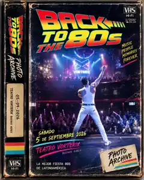

FOTOS DE LA BACK TO THE 80S
BUSCATE, SUBÍ LA FOTO
A TU IG/FB Y ETIQUETANOS!
Reviví la noche del sábado 5 de septiembre de 2026, o de 1985 ;)
BACK TO THE 80s · VIDEO CASSETTE● PLAY

PHOTO ARCHIVE205 FOTOS · TEATRO VORTERIX
▶ INSERT TAPE / VER FOTOS
SELECCIONÁ UNA FECHA